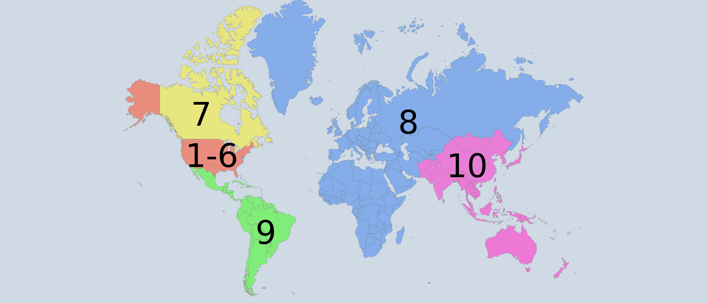

IEEE is the world’s largest professional association dedicated to advancing technological innovation and excellence for the benefit of humanity. IEEE and its members inspire a global community through IEEE's highly cited publications, conferences, technology standards, and professional and educational activities. IEEE, pronounced "Eye-triple-E", stands for the Institute of Electrical and Electronics Engineers. The association is chartered under this name and it is the full legal name. However, as the world's largest technical professional association, IEEE's membership has long been composed of engineers, scientists, and allied professionals. These include computer scientists, software developers, information technology professionals, physicists, medical doctors, and many others in addition to our electrical and electronics engineering core. For this reason the organization no longer goes by the full name, except on legal business documents, and is referred to simply as IEEE. IEEE's core purpose is to foster technological innovation and excellence for the benefit of humanity. IEEE’s vision statement is: IEEE will be essential to the global technical community and to technical professionals everywhere, and be universally recognized for the contributions of technology and of technical professionals in improving global conditions
The IEEE is the world’s largest technical professional society, and comprises more than 360,000 members who conduct and participate in its activities in 150 countries. Founded in 1884, the IEEE is a non-profit organisation, and through its members is a catalyst for technological innovation. We are a leading authority in a broad range of areas such as computer engineering, electric power, aerospace and consumer electronics, biomedical technology, and telecommunications, naming only a few. We publish 30 percent of the world’s literature in electrical engineering, computers and control technology, and hold more than 300 major conferences and 6,000 local meetings annually. Recognized as essential guides for every industry, more than 800 active IEEE standards are in use today with 700 currently in development. Please use the links at the left to navigate this website, and find out more about the Region and its activities.
Region 8 covers covers Europe, Middle East and Africa, as shown in the map below.
Read More Abour Region 8 From here
Region 8 is an effectively organized, dynamic and influential entity, recognized as a leading and esteemed part of a truly transnational IEEE, with IEEE benefits equally available to all members.
To serve the needs of the members of the Institute, the profession and society at large, by enhancing and supporting the IEEE’s Organizational Units and their activities within Region 8.
IEEE is the world’s largest professional association advancing innovation and technological excellence for the benefit of humanity. IEEE and its members inspire a global community to innovate for a better tomorrow through its highly-cited publications, conferences, technology standards, and professional and educational activities. IEEE is the trusted "voice" for engineering, computing and technology information around the globe.
IEEE Egypt Section covers the geographical area of the Arab Republic of Egypt and was established on September 8, 1955 as the 2nd IEEE section outside the US, The 2nd IEEE section in Region 8 (Africa, Europe and Middle East).
IEEE Egypt Section consists of 3 main entities: - Student Activities: 30+ affiliated IEEE student branches in different Egyptian universities.
- Affinity Groups:
-- IEEE Young Professionals (YP) Egypt
-- IEEE Women in Engineering (WIE) Egypt
- Technical Activities: concentrated in the so-called Society Chapters
You may contact the IEEE Egypt Section via the "Contact" page
IEEE Benha is the official branch of the global organization IEEE in Shoubra Faculty of Engineering & Benha University. We aim to increase tomorrow's engineers' technical awareness through our technical clubs, in addition to a set of annual technical workshops and events, to create a generation of technically creative engineers.

IEEE BenhaSB vision is To be a society of professional excellence, providing its members the highest quality and continuous personality and professional growth; to create a leading technical community able to spread technology creatively among students.

By existence step by step in the community for the purpose of spreading technical and technological issues and to collect, disseminate, and exchange technical and personal knowledge to enhance their 1- Technical and professional competence 2- Social responsibility for the development of their community
We aim to increase tomorrow's engineers' technical awareness through our technical clubs, in addition to a set of annual technical workshops and events, to create a generation of technically creative engineers.